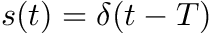
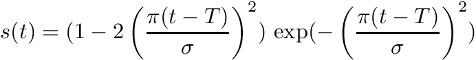
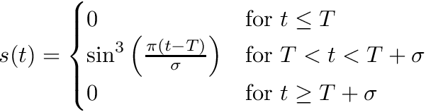

This module is dedicated to generate source wavelets. It provides functions for the Ricker wavelet, sin**3 and t*exp(t**2), a peak and Gaussian pulse. More...
Functions/Subroutines | |
| elemental real(real_kind) function, public | ricker (time, onset, width) |
| A Ricker wavelet. More... | |
| elemental real(real_kind) function, public | sin_3 (time, onset, width) |
| sin(.)-cubed wavelet More... | |
| elemental real(real_kind) function, public | delta (time, onset) |
| Peak at time T. More... | |
| elemental real(real_kind) function, public | brune (time, onset, width) |
| Brune Wavelet. More... | |
| elemental real(real_kind) function, public | gauss (time, onset, width) |
| Gaussian pulse. More... | |
Detailed Description
This module is dedicated to generate source wavelets. It provides functions for the Ricker wavelet, sin**3 and t*exp(t**2), a peak and Gaussian pulse.
Function/Subroutine Documentation
◆ brune()
| elemental real(real_kind) function, public source_signature_mod::brune | ( | real(real_kind), intent(in) | time, |
| real(real_kind), intent(in) | onset, | ||
| real(real_kind), intent(in) | width | ||
| ) |
Brune Wavelet.
Source-time-function used in SISMOWINE as
with
- Parameters
-
time Time in seconds, onset time of source onset in seconds width width  in seconds
in seconds
- Returns
- s Returns 1.0 if time == onset else 0.0
Definition at line 121 of file source_signature_mod.f90.
◆ delta()
| elemental real(real_kind) function, public source_signature_mod::delta | ( | real(real_kind), intent(in) | time, |
| real(real_kind), intent(in) | onset | ||
| ) |
Peak at time T.
Returns 1.0 if time == onset else 0.0

with
- Parameters
-
time time in seconds and onset time of source onset in seconds
- Returns
- s Returns 1.0 if time == onset else 0.0
- Todo:
- Make it more forgiving with respect to floating-point representations. It is somewhat fragile because time has to be precisely the same than onset
Definition at line 96 of file source_signature_mod.f90.
◆ gauss()
| elemental real(real_kind) function, public source_signature_mod::gauss | ( | real(real_kind), intent(in) | time, |
| real(real_kind), intent(in) | onset, | ||
| real(real_kind), intent(in) | width | ||
| ) |
Gaussian pulse.
Returns the value of a Gaussian pulse at time as
![\[ s(t) = \exp(-\frac{(t-T)^2}{\sigma^2})\]](form_128.png)
with
- Parameters
-
time time in seconds, onset onset time in seconds width and width in seconds
Definition at line 141 of file source_signature_mod.f90.
◆ ricker()
| elemental real(real_kind) function, public source_signature_mod::ricker | ( | real(real_kind), intent(in) | time, |
| real(real_kind), intent(in) | onset, | ||
| real(real_kind), intent(in) | width | ||
| ) |
A Ricker wavelet.
Returns the value of a Ricker wavelet at time as

with
- Parameters
-
time time in seconds, onset time of source onset in seconds width and width .
- Returns
- s value of the Ricker-wavelet at time
Definition at line 50 of file source_signature_mod.f90.
◆ sin_3()
| elemental real(real_kind) function, public source_signature_mod::sin_3 | ( | real(real_kind), intent(in) | time, |
| real(real_kind), intent(in) | onset, | ||
| real(real_kind), intent(in) | width | ||
| ) |
sin(.)-cubed wavelet
Returns the value of a sin()-cubed wavelet at time

with
- Parameters
-
time time in seconds, onset time of source onset in seconds width and duration of source signal seconds
- Returns
- s Value of the sin()-cubed wavelet at time
Definition at line 73 of file source_signature_mod.f90.